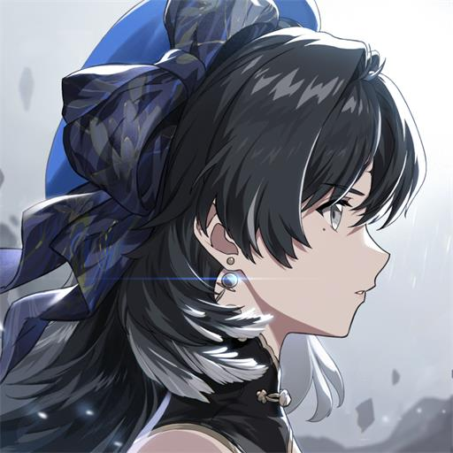
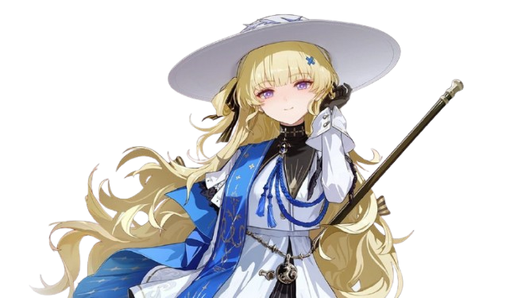
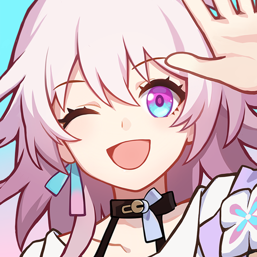
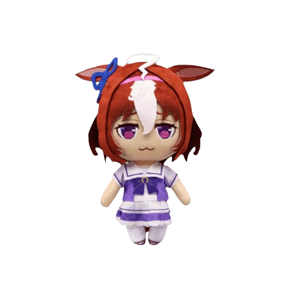
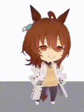

Here you are
Back to top page-
Zenless Zone Zero 
This game is probably for gooners that want to play in public.
So many physics in it, also the combat is very satisfy. -
Wuthering Waves 
After the Edgerunner collab, I spent more time in this game.
Btw, here is my Phoebe 👉👉👉
-
Genshin Impact 
It's been 6 years since the beginning. Now Im still with Paimon. What a long journey.
-
Honkai: Star Rail 
I dropped this game for 2 years cuz it's kinda boring to me.
However, it is still my one of the most played games -
Uma Musume: Pretty Derby 
Meisho Doto desu~ :3

